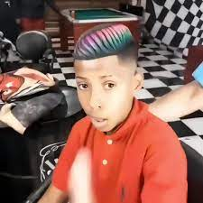

1- DINGO BELL MC TETEU
Ce titre écrit par Mc Teteu est devenu un énorme titre rempli de parole qui nous font réfléchir sur la société et ses défaut.
2- I play pokémon go (everyday)
Cette chason a été un vrai banger, une masterclass que tout le monde a écouté au moin une fois dans sa vie et qui a les cramtpé
3- DAME TU COSITA
Dame tu cosita une fameuse chanson en espagnol qui a retourné internet il y a quelque années
4- Rick Roll
Le Rick Roll est une musique devenu aujourd'hui un même iconique que tout le monde qui s'interesse a la culture d'internet doit connaitre
En effet la blague consiste a faire croire que 'lon evoie un lien a une personne mais cette dernière tombe sur le clip de Rick Astley